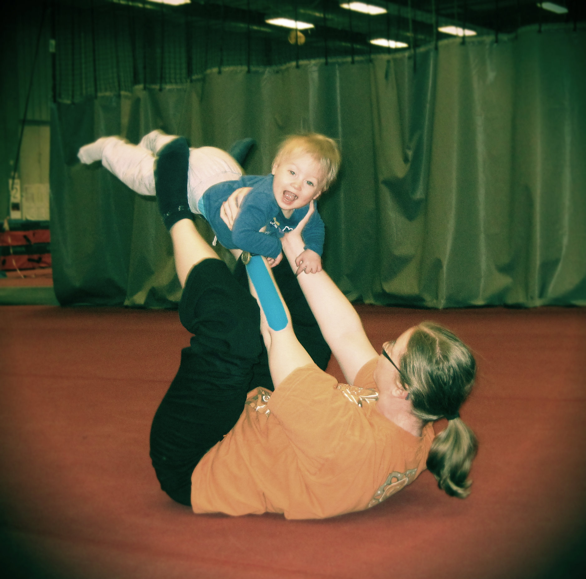

Sherborne & Peutertijd
Ik ben Tessa Raedschelders (°1983) en mama van Noor (°11/2014)
In 2005 studeerde ik af als gegradueerde in de orthopedagogie.
Tijdens mijn opleiding leerde ik Sherborne kennen.
Ik vond het meteen fantastisch! Daarom ging ik me hier later verder in verdiepen en volgde ik de opleiding “Sherborne level 1 en 2”.
Ik heb ook in de bijzondere jeugdzorg gewerkt, waar ik gezinnen aan huis begeleidde.
Daar heb ik ook echt kunnen ervaren hoe belangrijk bewegingssessies kunnen zijn voor mensen.
Privé voel ik sinds de geboorte van mijn dochter ook hoe zalig en goed Sherborne voor ons beide is.
Momenteel werk ik in het volwassenenonderwijs en heb ik eindelijk de tijd gevonden om er ook professioneel mee aan de slag te gaan.
Ik sta dan ook te popelen om jou en je (klein)kind te laten ervaren hoe zalig Sherborne kan zijn.
